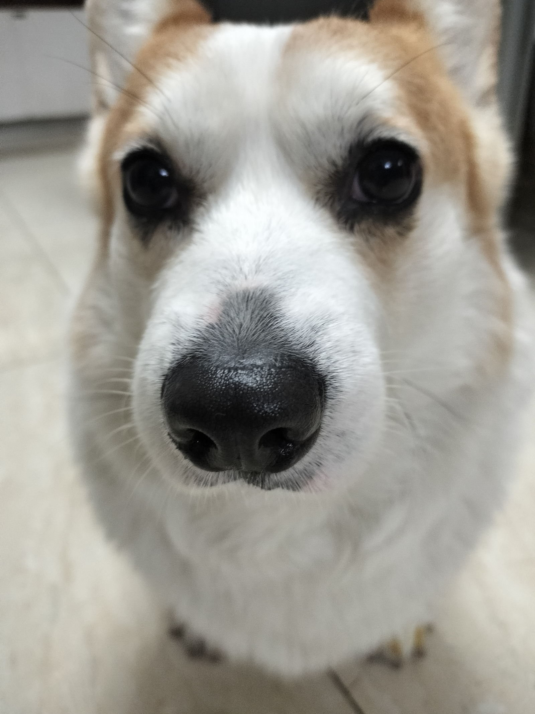

帮我联系一下。孩子以后我管了！
可以帮我联系到家人吗 我愿意资助他的孩子完成学业 直到大学毕业出来社会为止[一起加油][一起加油][一起加油]
个人建议，没有十分把握的情况下，还是放弃吧。因为您也有家人[感谢][感谢]
是真的谁能联系外卖员的父母妻儿，父母跟媳妇可以来我酒店当保安服务员。孩子我安排学校，河北省承德市双桥区绝无虚假
做好事不超过10天就被淡忘，留给有家人确是永远的痛
好像看到好多救人案例都是穷人，很少看到富人救人场景
五十年代，06年，他这时候也才五十出头[眼含热泪]
剧没看 哭没少哭
[流泪][流泪]又一个纯爱战士倒下了
就算快要离开了，宽植也在为爱纯和孩子们做自己最后的爱，看见慢慢几抽屉的小花发夹，真的绷不住哭啊[流泪][流泪]
宽植，下辈子一定要找到爱纯，再好好在一起
临终前看到最爱的女人哭，还不忘伸出两根指头隔空作出轻拍对方背的动作，这个动作持续了她们的爱情的一生呀，我哭死了，一个95后男士
春天的时候带走了妈妈，夏天的时候带走了小儿子，秋天带走了奶奶，冬天带走了宽植。爱，藏在春夏秋冬，也分别在春夏秋冬里[泣不成声]
55岁就不在了，太早了，留下爱纯独自近20年的时光[流泪][流泪]
真的是一对小苦瓜生下一堆小苦瓜[流泪][流泪]
金明从第一份兼职起就每月给妈妈寄十万韩元；宽植抵押房子被骗是金明挺着怀孕对身子放下自尊去借的钱；是金明把存给小春学琴的钱拿出来给爱纯宽植体检；宽植化疗住院是金明一直说“我一定会把你治好”；金明成功了在讲座上感谢的是自己的爸爸妈妈；金明更成功后给爱纯买了大房子……无论是作为长女，作为首尔大学的高材生，作为爱纯宽植的女儿，作为梁金明本身，金明都是被教育的、成长的非常非常好的人；有些人看到金明和爸妈顶嘴就要骂金明，但凡想想金明做的事呢
哥们你看，打这里可以吗

视频中的人：👥 观众：👤
谁懂[流泪][流泪]
谁能懂当两代人的爱情同框出现的时候啊[苦涩]
最近想戴个耳环，是这样打耳洞吗？

谁懂啊，两对情侣，感觉是跨越时空的对话[泣不成声]
恭喜🎉 五月份婚期 大理拍完婚纱照啦
冷知识，这种老式结婚证，两个人是连在一起的！不是分开一人一本[泣不成声]

问一句，真的有考驾照，全部科目一把过的吗？？？？
支持你，说的太对了，这是一群吸血鬼，
监管呢？[流泪]
助我奶奶手术顺利
会不会英语歌和会不会英语是两码事[看]
教科书式的营救
这。。。这是真实存在的高水平吗？
虽然过程看得提心吊胆，但是它匍匐前进去航空箱的那会真的好搞笑[捂脸]
一个人的水平可以媲美整个猫德学院
这个小猫内心其实怕死了，怕的一直趴在地上，匍匐前进
就叫她 蛄蛹者吧
养过猫的应该都知道，这猫绝对是有人养着的。 我的猫猫，出去也是这种德行，顾涌顾涌趴着走，因为害怕。要是流浪过的猫，不会轻易钻进航空箱的。最后祝博主生活愉快～
雇佣雇佣的就进箱子了，是真害怕了，也算有灵性～聪明宝宝
你声音呆呆的 长得怪好看的 男朋友好厉害 小猫还行
猫咪在车来车往的高架上，都没有被吓得到处乱跑，这点是最幸运的。
这技术牛啊，猫德学院的出来说话[咒骂]
Srds 这个奔跑的背影好可爱好搞笑[大笑]
这个抓猫技术太牛了，把兔爸送去进修进修吧[看]
天呢，原来它是跟着车上到的高架桥。
勋哥太牛了？有联系方式么？我每天喂的母猫抓不住，不停地生[流泪][流泪]
每次结婚都用这个歌
又暧昧上了
这是为了把蚊子骗出来然后冻死
周一、嗯！春天的味道、周二、啊！初夏来了，周三、炎热的盛夏来了、周四、好快、深秋了、今天周五，一晃入冬了好快啊！一年过去了
别的省的春天像花姑娘，四川的春天像疯婆娘[裂开][裂开][裂开]
怪不得我们叫“四穿”，一天内把四季衣裳一起穿[泪奔]
你慢点，我都差点赶不上
现在我的脑子
屁是大肠的叹息 尿是膀胱的泪滴[流泪]
就是这个感觉
希望我的闺女快点出重症监护室[泣不成声][泣不成声]
果然是牛马，一听马头琴就开始向往大草原
这个还好 之前听那个«我的父亲是瓦匠»真的绝了
伟大的堂吉诃德 要继续自己的冒险了
为什么我觉得这个调调给我的感觉和诀别书是一样的，欢快也有的伤感[听歌]
为什么会觉得欢快呢？明明是种被遮掩的悲哀
这是一个真正为了老百姓说话的人！
触发elo机制，一直败给匹配了个巅峰赛的军师[黑脸][黑脸][黑脸]
这个辩护律师是真的战绩可查，到现在才看到主页介绍内容[九转大肠]
来了个通天代，每个案子都是法学课上必讲的案[捂脸]

如果是你，会刚到底吗？[尬笑]
去搜搜殷清利律师，看看他打过的那些硬仗
兄弟们这真是抖音上最漂亮的女律师了 [流泪] [流泪] [赞] [赞]
26年山西公考，大同阳高县公安局招录3人，大同阳高县检察院招录12人
知道大圣一个人直面十万天兵天将有多大压力了吧[看]
来碗炒狗毛[胜利]有毛掀摊 没毛也掀[憨笑][胜利]
能带带我家狗吗？可以当英国表姐的上门女婿 
这摊别想要了
摊子给你掀了，别问为啥，单纯想掀[憨笑]
在这ai畅行的时代，总有一批老艺术家还坚持着活字印刷
谁说是假的，我之前就买过
不是，为什么有人觉得是假的，承认小狗勤劳很难吗[咒骂]
有粒米把你摊掀了[微笑]
这狗太心机了，看见有摄像机才开始干活[憨笑]
那么说来，那么应该是女性结账啊[捂脸][捂脸]
Read more: